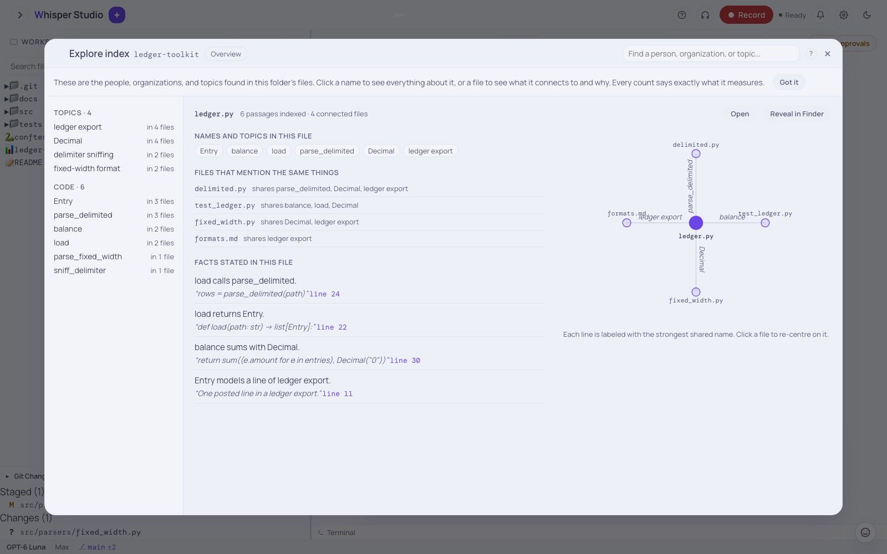

Index & semantic search
An attached file lets Claude read one file. An index of a folder lets Claude search all the folder. Claude then answers from the passages that the search finds, and it gives the source of each passage.
An index is useful for a folder of CVs, invoices, notes, or a full codebase. With an index, you can ask questions on all the files at the same time. Build an index for the folder and select the index in the chat. The answers then use the related passages and contain links to the source files.

The goal
An index lets Claude search a full workspace, not only one attached file. When a connected folder has an index, Claude can use semantic search on it. Claude then answers from the passages that the search finds, and does not open each file. This method is faster and costs less, because Claude reads fewer files. Each answer from the index ends with a list of sources.
Build the index one time. Build it again when the files change. Then ask questions with the folder selected.
Build an index for a folder
You build an index from the workspace connect dialog. This is the same dialog that you use to connect a folder.
-
Open the workspace connect dialog
The dialog shows your recent folders and the index state of each folder. If you did not connect a folder before, refer to the workspace IDE.
-
Optional: change the index settings
Click "Folder options" on the folder row. The menu shows the index settings of that folder: the refresh schedule, the engines, and the model for entity extraction.
-
Start the build
In the same menu, click "Index this folder". For a folder with an index, the item is "Reindex now". When you connect a new folder, you can also select "Index this folder for semantic search on connect".
-
Read the state
The dialog shows the progress of the build. At the end, it shows the number of files and passages, and the number of files that changed.
The build reads the folder tree. It changes each file into text, divides the text into passages, and makes an embedding of each passage. The build skips these items:
- All hidden folders, for example
.git,.next, and.cache. - The folders
node_modules,venv,__pycache__,dist,build,target, andmodels. - Files with an extension that the app cannot read.
The build does not skip hidden files. For example, it reads .eslintrc.json, because the app can read the .json
extension.
Each build after the first build is incremental. The build compares the size and the time of change of each file. It makes embeddings again only for new and changed files. It removes deleted files from the index. Thus, a new build is fast.
One folder has one build at a time. Thus, a manual build and the scheduled refresh of the same folder cannot run at the same time. Two different folders can build at the same time. Each folder has its own refresh schedule: daily, every N days, or weekly on one day, at an hour that you select.
The index contains more than text and code. The app reads a spreadsheet as a schema and a sample. It changes PDF, Word, PowerPoint, HTML, and EPUB files into text. It uses OCR on images, and it transcribes audio and video on this Mac. Refer to Attachment extraction.
Ask a question on the folder
After the build, you can select the folder as a search target in the chat. When one or more indexes are selected, Claude searches them first. Claude then answers from the passages that the search finds.
-
Select the folders to search
In the chat box, click the "More" button (···). Click "Index search". The row shows the number of selected indexes, for example "1/3". Select the folders under "Search these indexes".
-
Ask the question
Type the question and press Enter. The app searches the selected indexes before it calls the model.
-
Read the answer and its sources
Claude answers from the passages and ends with a "Sources" section. Each link opens the file at the related lines.
The app keeps the selection for each session. With no workspace connected, a new session
searches all the indexed folders. With a workspace connected, a new session has no selected
index. Claude then uses the workspace_semantic_search tool when it must search
the index.
The search is hybrid by default. The app joins the results of a vector search and of a keyword (BM25) search. A reranker can sort the results again. The reranker is off by default. A message with no content words, for example "hey" or "ok thanks", does not start a search.
To force a search, type @index in the message. The @ menu
of the chat box also shows @index. The app removes @index from the
text before the model reads it. Use @index when the app skips the search, or when
a connected workspace has priority.
An example for a folder of CVs:
Which candidates have Kubernetes experience, and for how long?Claude searches the index and gets the passages of the CVs that contain Kubernetes. Claude answers from these passages and gives a link to each CV.
The grounding chip and the sources
When an answer uses the index, a grounding chip shows below the answer. The chip shows that the search ran. It shows the number of searched folders and the number of passages. If the chip shows no matches, no passage in the selected folders was related to the question. Claude then uses its usual tools and does not make a citation.
There is a second check. A vector search always returns a nearest passage, also when the
passage is not related. If the best passage in the full index is not a good match, the app
adds no passage to the prompt. A search with @index ignores this check. Use
@index when you know that the answer is in the files.
Click the chip to see the passages of the answer. Each source row shows these items:
- The file and the line range. Click it to open the file.
- The reason for the match: "matched your words" (keyword), "similar meaning" (semantic), or "linked through shared entities" (the GraphRAG step). The GraphRAG step also shows entity chips that open the index explorer.
- A part of the passage text.
The app keeps the sources for each session. Thus, the panel also opens for an old answer.
The chip shows that the answer comes from your files. If a
folder is not in the chip, make sure that the folder has an index. Then select the folder for this
session in "Index search". Or type @index in the message.
@docs: ask this manual
The same search can use the documentation of the app, which is this manual. Type
@docs in a message. The app searches the sections of the manual and adds
the passages to the prompt. Claude must answer only from the manual and give the pages that
it used. If the manual does not contain the answer, Claude tells you. The citations open in
the docs viewer in the right pane.
Use @docs for questions on Whisper Studio, for example "@docs how
do cron jobs pick a timezone?". @index searches your own folders. @docs
has no settings. The app builds the section index at the first use, and builds it again
after an app update. The first build uses some seconds.
The index explorer
The build also extracts named entities from each passage, for example persons, organizations, and topics. The app joins different spellings of one name into one entry. The app selects the entity types for each file from its extension. Thus, a CV and a source file get different types.
On this Mac, the default extractor is "GLiNER large (multilingual)". For an English corpus, you can select "GLiNER2 (English-focused, faster)" in the index settings of the folder. In Cloud mode, Claude Haiku extracts the entities.
The index explorer shows the result in words. To open the explorer, use one of these controls:
- The compass button in the header of the workspace panel.
- "Show connections" in the right-click menu of a file.
- The command palette.
- The menu of an indexed folder in the connect dialog.
The overview shows groups of files and the entities that they share. Click a name to open its page. The page shows each relation as a sentence, for example "Dana works at Northwind Bank, confirmed in 3 files". Below the sentence is the exact quote and a link to the line in the file. Click a file to see its entities and the files that share them.
The search also uses the entities. After the vector search finds the nearest passages, the search follows the shared entities one step. Thus, an answer can contain a passage without your search words. That passage shares an entity with a passage that matched. These passages show under the heading "Related passages".
Each backend has its own index
The model mode sets where the index build and the search
run. Each mode uses a different embedding model. The reranker column applies only when the
rag_reranker feature flag is on. It is off by default.
| Mode | Embeddings | Reranker | Entity extraction |
|---|---|---|---|
| Cloud | Cohere Embed v4 (Bedrock) | Cohere Rerank 3.5 | Claude Haiku |
| Hybrid | Your selection for each capability | Your selection for each capability | Your selection for each capability |
| Local | Qwen3 (on this Mac) | Qwen3 Reranker | GLiNER (on this Mac) |
Vectors from different embedding models do not match. Thus, each embedding backend has its own index. Each index is a separate database file in the same folder. A change of model mode does not delete or change the index of the other mode. But a folder that has an index for one backend has no index for a different backend.
If a folder returns no results after you change the model mode, the index is for the other backend. Build the index again in the current mode.
Tips
Build one time, ask many times
The first build costs the most time. After that, each question is a fast search. A new build reads only the changed files.
Select one folder
If you have more than one index, select only the related folder for the session. The answers then use only that folder.
Read the chip
The grounding chip shows the number of folders and passages of the answer. Click it to see the passages. "no matches" tells you that the answer did not use the index.
Attachment or index
For a question on one file, attach the file. Use an index to search a full folder. Refer to Working with documents.
More information
This tutorial shows the controls. For the internal steps, read Index / GraphRAG & search. That page shows the embeddings, the reranker, the entity extraction, the sqlite-vec vector store, the GraphRAG step, and the prompt block of the passages. For the model modes, read Model modes.
Related: The workspace IDE, Model modes, and Index / GraphRAG & search.